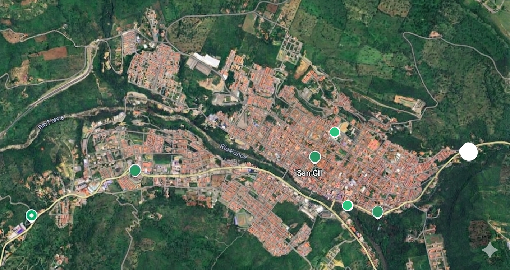

Lack of Recycling Habits
San Gil is a beautiful tourist town in Santander, but it faces a growing waste management problem. Most households do not separate organic waste from recyclable materials, and public recycling bins are scarce.
Building a cleaner future for San Gil, Santander
See our solutionsSan Gil is a beautiful tourist town in Santander, but it faces a growing waste management problem. Most households do not separate organic waste from recyclable materials, and public recycling bins are scarce.
Create infographics and videos for Instagram, WhatsApp, and Facebook to teach proper recycling habits in San Gil.
Install labeled recycling bins in parks, schools, and public areas with a digital map showing their locations.
Build "Recicla San Gil" — a website with information, recycling maps, contact form, and educational resources.
Find the nearest recycling station in San Gil. We propose these key locations:

Download these materials to learn how to recycle correctly at home.
Step-by-step guide on how to separate waste.
Download PDFVisual summary of what goes where.
Download PDFDaily habits to reduce waste.
Download PDFReport recycling issues, share your ideas, or send us a message.
San Gil, Santander, Colombia
Step-by-step log of how we built this website — from problem selection to final design.
We chose the topic "Environmental Awareness & Recycling Habits in San Gil" because we identified a real need in our community. Many residents do not separate waste properly, and there is little information about recycling.
We proposed three solutions: a digital campaign on social media, community recycling stations with a map, and a responsive web page called "Recicla San Gil" to educate and inform the community.
We created the semantic HTML5 structure with a header, navigation bar, hero section, problem section, solutions section, map, resources, contact form, and footer. We used semantic tags like section, article, and nav for accessibility.
We designed a green color palette to match the environmental theme. We used CSS Grid for 3-column layouts and Flexbox for the header and navigation. We added responsive media queries for mobile and tablet devices.
We created a wireframe to plan the page layout before coding. After presenting the prototype to classmates, we received feedback and improved the design with a hero button, map section, and downloadable resources.
We completed the final responsive webpage with all sections, placeholder images with alt text, a contact form, accessibility features (skip link, ARIA labels), and the process log you are reading now.